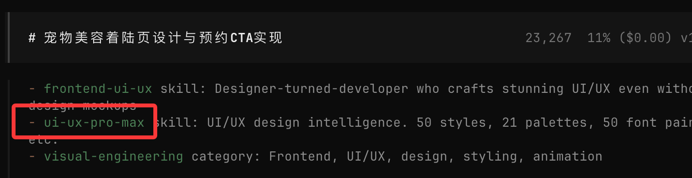
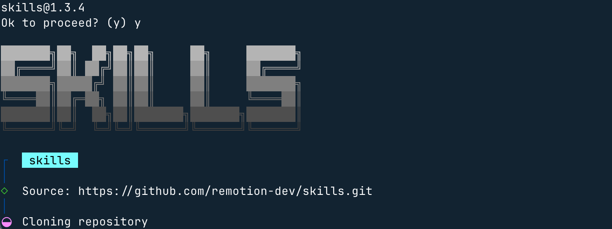

Uso de habilidades de OpenCode
En el contenido anterior, ya hemos aprendido sobre OpenCode y skills. Si aún no lo has leído, puedes consultar:
A continuación, presentaremos cómo usar skills en OpenCode.
Actualmente hay muchas skills ya preparadas en el mercado que podemos usar directamente. Podemoshttps://skills.sh/buscar más skills.
Método de instalación:
npx skills add <owner/repo>
Nota:Si no conoces npx, puedes consultar:Tutorial de introducción a npx
ui-ux-pro-max
A continuación, usaremos la skill `ui-ux-pro-max` como demostración. Dirección:https://skills.sh/nextlevelbuilder/ui-ux-pro-max-skill/ui-ux-pro-max。
UI/UX Pro Max es una habilidad inteligente de diseño con IA (AI Skill) que proporciona conocimiento de diseño estructurado y asistencia automatizada para construir interfaces de usuario (UI) y experiencias de usuario (UX) de nivel profesional. Se utiliza principalmente para integrarse con asistentes de codificación de IA (como Claude Code, Cursor, Windsurf, etc.).
UI/UX Pro Max incluye una base de datos de diseño buscable que recomienda inteligentemente estilos de interfaz, combinaciones de colores, tipografía e implementación de componentes según indicaciones de lenguaje natural.
Comando de instalación:
npx skills add https://github.com/nextlevelbuilder/ui-ux-pro-max-skill --skill ui-ux-pro-max
Durante el proceso de instalación, puedes marcar el entorno que necesitas, por ejemplo OpenCode:

A continuación, aquí elige el directorio actual, es decir, el que creamos antesopencode-ejemplo-test, la otra opciónGlobales la instalación global:

A continuación, solo presiona Enter hasta terminar.
UsoopencodeAbre OpenCode con el comando e ingresa/uiy podrás ver la skill instalada:

Luego podemos ingresar directamente el requisito:
Crear una página de aterrizaje para servicios de estética de mascotas, con un estilo alegre y cercano, e incluir un botón de llamada a la acción para reservas.
La IA llamará automáticamente a la skill que instalamos para diseñar. Solo presiona Enter hasta terminar:

A continuación, se generan automáticamente el directorio y los archivos:

Luego, observa el resultado final, se ve mucho mejor:

remotion-best-practices
A continuación, usaremos la skill `remotion-best-practices` para la demostración.
- Opencode: se encarga de que la IA escriba código en un flujo de trabajo automatizado
- remotion-best-practices: una skill que se encarga de generar videos directamente con React
remotion-best-practices es una habilidad especializada para Remotion, que incluye decenas de archivos de reglas (basados en las mejores prácticas oficiales), por ejemplo:
- Contenido tridimensional (3D)
- Fundamentos de animación
- Importación de medios (imágenes, audio, fuentes)
- Subtítulos y sincronización de subtítulos
- Organización de secuencias y escenas
- Video transparente y edición
- Animación de texto y métodos de interpolación …
Dirección de la skill:https://skills.sh/remotion-dev/skills/remotion-best-practices
Instalación y uso
Antes de comenzar, primero creamos un directorioopencode-ejemplo-test:
mkdir opencode-ejemplo-test cd opencode-ejemplo-test
En el directorio `opencode-ejemplo-test`, podemos usar el comando npx para instalar:
npx skills add remotion-dev/skills

Durante el proceso de instalación, puedes marcar el entorno que necesitas, por ejemplo OpenCode:
A continuación, aquí elige el directorio actual, es decir, el que creamos antesopencode-ejemplo-test, la otra opciónGlobales la instalación global:
Luego solo presiona Enter hasta terminar. Después se mostrará el directorio de instalación y las herramientas de desarrollo compatibles:


También podemos abrir OpenCode e ingresar/remotiony podrás ver esta skill:

Luego, en el cuadro de entrada, escribe:
生成一个 Hello Ejemplo！的演示视频
A continuación, la IA encontrará esta skill (habilidad):

Luego, la IA usará esta skill para comenzar a diseñar y escribir: